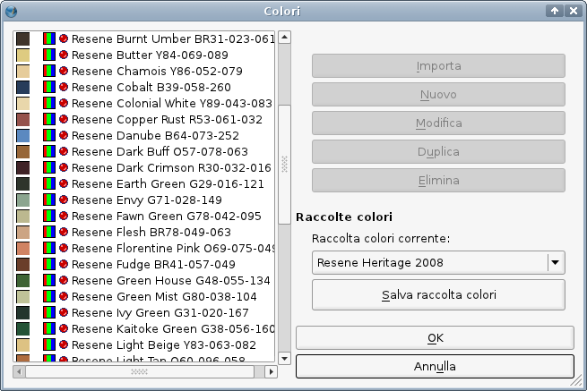

La Resene Paints Limited è un'azienda produttrice di vernici e pitture, specialmente per interni e arredamento; ha sede in Nuova Zelanda, e i suoi mercati principali si trovano nella regione del Pacifico, principalmente in Australia e Nuova Zelanda. Anche se le sue raccolte di colori non sono pensate per la stampa, esse non sono inutili in Scribus; al contrario. Se fossero inutili, il team di Scribus certamente non si preoccuperebbe di includerle nel programma. In primo luogo si deve notare che spesso è necessaria una stretta corrispondenza tra colori usati in settori diversi (dai rivestimenti alla stampa) da parte di una data azienda od organizzazione. In secondo luogo, la Resene, come altri produttori di colori, mette a disposizione dei campioni di colore, che permettono di verificare facilmente i colori con uno stampatore. In terzo luogo, vi è il lato estetico delle raccolte della Resene, poiché esse sono composte di colori vivaci accuratamente scelti, e possono rendere più attraente l'aspetto dei vostri documenti.
|  |
Le raccolte di colori Resene vengono regolarmente aggiornate, e, grazie a un accordo con l'azienda, gli utenti di Scribus riceveranno versioni aggiornate con ogni nuova versione di Scribus. Come già sapete, questo non avrà effetti sui documenti che utilizzano versioni precedenti delle raccolte, poiché esse sono salvate all'interno dei documenti stessi, e da essi possono essere importate nel file corrente. Se per qualche motivo avete bisogno di utilizzare una vecchia raccolta, anche precedente alla sua inclusione in Scribus, potete prelevare la raccolta che vi interessa sotto forma di file AutoCAD color book (*.acb) e utilizzare Swatchbooker per convertirla in file XML raccolta colori di Scribus.